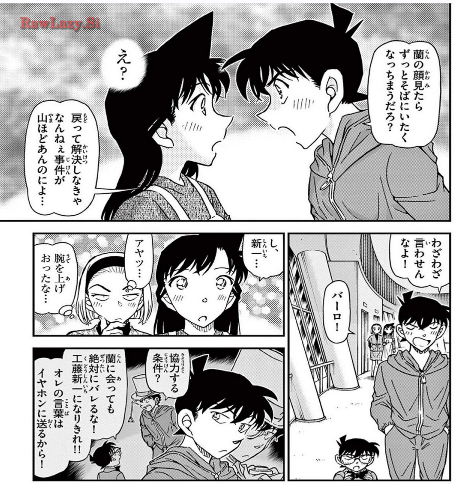
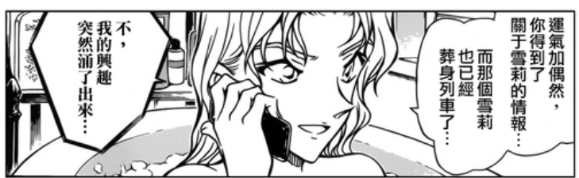
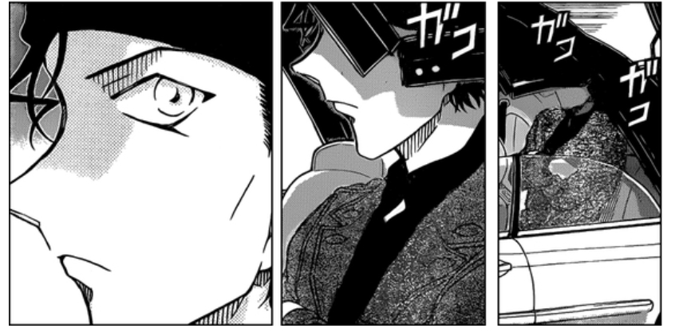
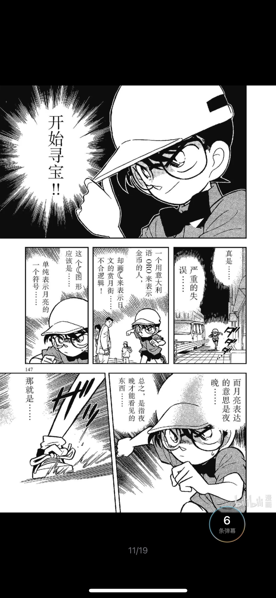

一千多话的漫画难免会有作画失误，有些连载版的bug会在单行本进行修正，但有些一直没有得到修正
本帖想汇总一下我知道的单行本中的作画失误（？），打问号是因为有些矛盾的地方读者可以强行脑补出一个解释，也有些地方是被怀疑为故意设置的细节伏笔，但我个人倾向于是作画失误
除了作画失误之外还有一些错别字或者文字上的bug
本帖暂不包括以下问题
1.时间线问题：https://tieba.baidu.com/p/8442822996
2.回忆中的表情或视角问题：https://tieba.baidu.com/p/8501137304，https://tieba.baidu.com/p/8504212280
我个人看到的毕竟不全，如果有谁知道其他我没提到的地方的欢迎补充
本帖想汇总一下我知道的单行本中的作画失误（？），打问号是因为有些矛盾的地方读者可以强行脑补出一个解释，也有些地方是被怀疑为故意设置的细节伏笔，但我个人倾向于是作画失误
除了作画失误之外还有一些错别字或者文字上的bug
本帖暂不包括以下问题
1.时间线问题：https://tieba.baidu.com/p/8442822996
2.回忆中的表情或视角问题：https://tieba.baidu.com/p/8501137304，https://tieba.baidu.com/p/8504212280
我个人看到的毕竟不全，如果有谁知道其他我没提到的地方的欢迎补充
首先是A药和解药的颜色问题，两中药的颜色直到2020年才定下来
这个可以参考我的帖子 https://tieba.baidu.com/p/8864277298
这个可以参考我的帖子 https://tieba.baidu.com/p/8864277298
2024-05-29 10:49 | 平者深黑:打错字了，“中”→“种”
其次是打电话的时候变声器的问题
Vol.24 File.10 柯南以工藤新一的身份打给目暮，让他拦下琴酒和伏特加，未使用变声器 Vol.24 File.11 柯南在博士家以工藤新一的身份用普通电话打给目暮，未使用变声器 Vol.30 File.1 柯南以工藤新一的身份打电话给小兰，未使用变声器
Vol.33 File.1 柯南以工藤新一的身份打电话给高木，协助破案，使用了变声器
如果以上都不存在作画失误，那么我们需要打3个补丁：
Vol.30 File.1 柯南以工藤新一的身份打电话给小兰，未使用变声器
Vol.33 File.1 柯南以工藤新一的身份打电话给高木，协助破案，使用了变声器
如果以上都不存在作画失误，那么我们需要打3个补丁：
1.耳环型电话是自带变声功能
2.博士对家里的电话也进行了魔改
3.Vol.33 File.1中耳环型电话的变声功能坏了
虽然也能解释，但感觉需要打的补丁太多了
Vol.24 File.10 柯南以工藤新一的身份打给目暮，让他拦下琴酒和伏特加，未使用变声器 Vol.24 File.11 柯南在博士家以工藤新一的身份用普通电话打给目暮，未使用变声器
1.耳环型电话是自带变声功能
2.博士对家里的电话也进行了魔改
3.Vol.33 File.1中耳环型电话的变声功能坏了
虽然也能解释，但感觉需要打的补丁太多了
纽约篇回忆的准确性的问题之前有吧友考察过 https://tieba.baidu.com/p/8507220076
我觉得比较难以解释的bug是新一放在门口的伞，在新一进去之后就消失了
我觉得比较难以解释的bug是新一放在门口的伞，在新一进去之后就消失了
2024-05-29 10:58 | 贴吧用户_0Q8721R:新一进门的时候没有画全身，不能排除新一把伞拿进去了的可能。
Vol.41 File.10 哀的拖鞋。一开始是光着脚的，然后穿上了拖鞋，之后拖鞋又消失了
Vol.90 File.9 秀一说出“放弃吧”的时候左手撑墙 Vol.90 File.10 变成了右手撑墙
Vol.33 File.11 六根手指的小兰
2024-05-31 16:50 | 杠杠的鲜肉:wtf
Vol.105 File.7 兰的衣服颜色

宫野明美的身高
Vol.95 File.8 19年前的宫野明美（6岁左右）和降谷零（10岁左右）差不多高 是青山不会画10岁小孩和6岁小孩的身高差吗？
Vol.49 File.5 我们可以看到四年级小学生和一年级小学生的身高差 元太倒是跟四年级小学生差不多高，难道是小时候的明美长得特别高吗？
Vol.41 File.10 财津浮彦说约20年前（19年前），宫野明美大概4、5岁，说明19年前的明美并不是长得特别高的，至少不会看上去跟10岁的小孩差不多高
Vol.95 File.8 19年前的宫野明美（6岁左右）和降谷零（10岁左右）差不多高 是青山不会画10岁小孩和6岁小孩的身高差吗？
Vol.49 File.5 我们可以看到四年级小学生和一年级小学生的身高差 元太倒是跟四年级小学生差不多高，难道是小时候的明美长得特别高吗？
Vol.41 File.10 财津浮彦说约20年前（19年前），宫野明美大概4、5岁，说明19年前的明美并不是长得特别高的，至少不会看上去跟10岁的小孩差不多高
接下来是一些文字bug
Vol.39 File.10中，藤枝繁47岁，Vol.40 File.1变成了42岁
Vol.39 File.10中，藤枝繁47岁，Vol.40 File.1变成了42岁
Vol.26 File.2蒲田耕平28岁，Vol.26 File.2变成了27岁
Vol.90 File.3 “和他一起来的两个人”，实际上和新一一起来的只有博士，这个暂时没看到什么合理的解释
2024-05-29 11:01 | 贴吧用户_0Q8721R:飞机是三人一排，但博士和新一身边没有画其他人。可能是玛丽的人脉只能查到机票购买记录、查不到出入境记录，所以只发现了这三个人一起购票的记录。当然，只是推测。
Vol.59 File.11新名香保里，“名”写成了“明”
简中翻译没动
繁中翻译给修了
但是动画不仅没修“明”的错别字，还增加了一个错别字，把“検”写成了“験”
日文漫画：有一个错别字
简中漫画：照搬日文版
繁中漫画：改正了错别字
动画版：增加了一个错别字
简中漫画：照搬日文版
繁中漫画：改正了错别字
动画版：增加了一个错别字
关于“太閣”和“太閤”
Vol.32 File.1和Vol.80 File.10两处写的“太閣”，其他地方基本上（我没一个一个看）都是“太閤”，例如Vol.32 File.2
Vol.32 File.1和Vol.80 File.10两处写的“太閣”，其他地方基本上（我没一个一个看）都是“太閤”，例如Vol.32 File.2
Vol.24 File.10 テロメアーゼ正确的写法应该是テロメラーゼ（端粒酶）
Shelling ford正确的拼法应该是Sherrinford
目前大概就这些了，欢迎补充
顺便来发一些青山自己意识到然后改掉的，或者被人提醒然后承认出错的，台词和画面我就混着发了。
顺便一提，97卷厨子的门牙还有漏改的，光我注意到的就至少2处。
最开始画《柯南》的时候经常忘画眼镜，有的时候还会画到步美脸上
79卷书脊小动画柯南戴着眼镜捡眼镜，青山表示完全没注意到
还有一个我不知道怎么解释的

2024-05-29 11:23 | 贴吧用户_0A18658:就是改了，结果还是不合理2024-05-29 13:38 | 平者深黑:回复 贴吧用户_0A18658 :千叶是20期生和小林是18期生的设定都是出自Vol.71 File.1，时间胶囊也沿用了小林18期生这个设定，估计就没意识到阿笠博士的问题2024-05-29 13:58 | 平者深黑:有日本网友解释为博士是上的“旧制の帝丹小学校”2024-05-29 20:47 | 贴吧用户_0RJ1Zty:回复 平者深黑 :青山要找补这个问题还得顺便找补一下帝丹小学校舍有30年历史的问题2024-05-29 22:21 | 平者深黑:搞那么复杂还不如装死
19期生13年前毕业，那么第1期学生是31年前毕业，第1期学生入学是37年前，30年前翻新一下教学楼似乎没什么矛盾的。如果博士上的是旧制帝丹小学，那么旧制帝丹小学至少在46年前就存在了，30年前翻新一下教学楼也更合理
有我最爱的元太秃斑问题 （这个似乎非常多）
（这个似乎非常多）
（这个似乎非常多）
我记得比较简单清楚的是满月篇小哀的拖鞋，特别大，一会有一会没有。
还有啊咧咧案小林老师的衣服也出现了作画失误
2024-05-31 15:23 | 平者深黑:方便贴个图吗？
小哀的鞋子
小林的衣服
很正常啊，剧场版每年都会有崩坏的画面
这个贴很好啊，希望楼主能一直更下去，整理青山的作画失误
柯南帮小哀找她姐姐藏的录音带的时候，社长死的部分，社长死之前小哀戴着口罩，社长死的时候小哀没有戴口罩。
后面小哀的口罩在高木来之后有一个取下动作的分镜，应该也是作画失误。
后面小哀的口罩在高木来之后有一个取下动作的分镜，应该也是作画失误。
感谢楼上补充
Vol.41 File.10 第17页，灰原哀戴着口罩 Vol.41 File.10 第18页，灰原哀的口罩消失了 Vol.41 File.11 第6页，灰原哀摘下口罩 所以死者倒下的画面应该是漏画了口罩
所以死者倒下的画面应该是漏画了口罩
Vol.41 File.10 第17页，灰原哀戴着口罩 Vol.41 File.10 第18页，灰原哀的口罩消失了 Vol.41 File.11 第6页，灰原哀摘下口罩
827话贝姐泡澡，连载版是披发，单行本修正成束发

896秀一复活，单行本改成闭眼了

860这个二哥袖子我记得也是单行本上色有修正，第一张米花学园汉化的可能图源太糊修图后就是一团黑
Book57
朱蒂的眼镜
感觉这个比较严重，毕竟之前才说了贝尔摩多假扮的医生眼镜不同
朱蒂的眼镜
感觉这个比较严重，毕竟之前才说了贝尔摩多假扮的医生眼镜不同
2024-08-07 14:26 | 平者深黑:贝尔摩德假扮新出的眼镜不同没有明确说过。贝尔摩德在绯色篇假扮朱蒂时戴的眼镜并没有跟真正的朱蒂不同。不过这里眼镜不同确实可以算是一个bug，因为设定上这个眼镜是朱蒂父亲的遗物，外形不应该有变化
38话柯南认真起来，将帽檐转到前面仅仅3页，帽檐又变到后面了

Book98男主杯子的位置
因为一直讲话且有佐藤杯子的参照，杯子却在右左右地移动
因为一直讲话且有佐藤杯子的参照，杯子却在右左右地移动